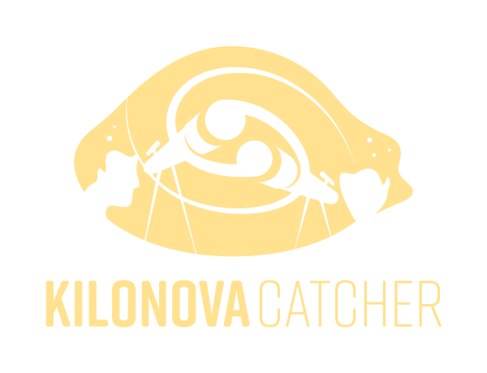

Somewhere out there, two neutron stars are spiraling toward each other. When they collide, they will forge gold, platinum, and uranium in a flash brighter than a billion suns. They will bend spacetime itself.
Kilonova Catcher exists to catch that light. These games train the exact skills our global network of astronomers uses every time an alert fires. They mirror the contributions scientists like you will be making!
This is not a simulation of science. This is the science.
↓ Choose a game to begin
Here's how your decisions compared to experienced KNC observers.
Your real/bogus and type classification results.